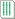
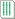

立直 （リーチ）
＃門前
誰からも鳴いていない状態で聴牌していると立直できる。上がった（和了した）後に成立する。


もっとも作りやすいといわれる役で、作ってしまえばこの役のみでも上がれる。
この手のみで上がると安手（安い手）といわれる。
＃門前
誰からも鳴いていない状態で聴牌していると立直できる。上がった（和了した）後に成立する。
么九牌（一／九／字牌）を使わないで上がると成立する。略してタンヤオともいう。


 


＃門前
門前（鳴いていない）かつツモして上がったときに成立する。略してツモともいう。


自分に割当られた方角（自風）と同じ刻子・槓子をつくったときに成立する。場の始まりに自風を確認しよう。※画像は自風が「西」だった場合


場と同じ刻子・槓子をつくったときに成立する。場の始まりに場風を確認しよう。大体の場は「東」「南」のどちらかになる。

白・發・中で刻子・槓子をつくったときに成立する。3枚そろえるだけで役になるのでお手軽。とはいえ1飜にしかならないので、対々和や小三元も見据えて得点を伸ばそう。
#門前
順子（連番）を4つ、アタマは役牌ではない、両面待ちのときに成立する。役が低い割に条件が多く、難易度は高い。他の役と合わせて成立させるとよい。

#門前
同種同数の順子（連番）を2つつくると成立する。


他プレイヤーが加槓を宣言した牌でロンアガりすると成立する。
嶺上牌（ドラの積んである山の牌）でアガると成立する。
その局最後のツモ牌でアガると成立する。
その局最後の捨て牌でアガると成立する。
立直したあと誰からも鳴かれずに1巡以内にアガると成立する。
ドラ表示牌の次位牌。単独では成立せず、他の役で上がった際にボーナスがつく。
のとき